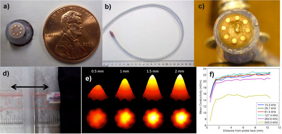
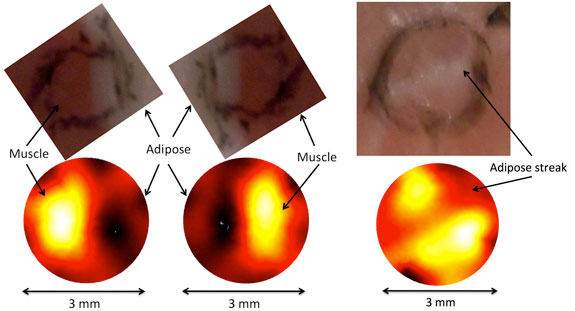

Intraoperative Surgical Margin Assessment with Electrical Impedance Spectroscopy
With funds from the National Institutes of Health and the National Cancer Institute, we are creating an intraoperative device able to assess surgical margin status during radical prostatectomy (RP) to improve patient care, and eventually:
- Reduce the mortality rate associated with prostate cancer recurrence
- Reduce the morbidities associated with adjuvant and salvage therapies in patients who would have had positive surgical margins
- Reduce the financial burdens to the patient and healthcare providers associated with cancer recurrence
Currently there are no clinical protocols routinely used to intraoperatively assess surgical margin status during prostate surgery. Instead they are evaluated through pathological assessment of the prostate when it is too late to provide additional surgical intervention, following radical prostatectomy.
We are developing an intraoperative device to assess surgical margin status based on electrical properties observed between benign and malignant prostate tissues. We hypothesize that gauging these properties intraoperatively has the potential to provide clinically relevant information regarding surgical margin pathology. By constructing EIS probes to sense and image at near microscopic resolution the prostate and surrounding tissues during RP, we will be able to provide surgeons with real-time assessment of margin pathologies. Our new probe will interface with a robot-assisted minimally invasive approach for RP, already employed at Dartmouth. Surgical visualization is provided through an endoscopic optical system, which we are using for registering the measured electrical properties to the precise anatomic locations probed. The probe and visualization tools are being coupled into an integrated intraoperative system to provide a surgeon control of probe positioning and measurement acquisition. Our long-term vision is to develop this tool so that the electrical properties of prostate will be sensed around sites most often noted for positive surgical margins including the apical margin, base margin, and neurovascular bundle margin (when nerve sparing procedures are performed).

a-b) 8 electrode 7 mm diameter micro-EIT (electrical impedance tomography) probe, c) 8 electrode 12 mm diameter micro-EIT probe with small form factor pressure sensor centrally located, d) experimental configuration for assessing depth of sensitivity of micro-EIT probe. Probe is translated away from high impedance plastic inclusion, e) conductivity images of saline and f) computed mean conductivity as a function of distance as probe is translated away from insulating inclusion for different signal frequencies. Note that conductivity images and mean conductivity demonstrate a depth of sensitive to approximately 1.5 mm.

Micro-EIT images of bovine conductivity. Left and center images show adipose (low conductivity dark regions) and muscle (high conductivity bright regions) tissue images on each half of the probe. Right image shows low conductivity centrally located stripe representing adipose tissue straddled by higher conductivity muscle tissues. Black ink on tissue represents probe position.